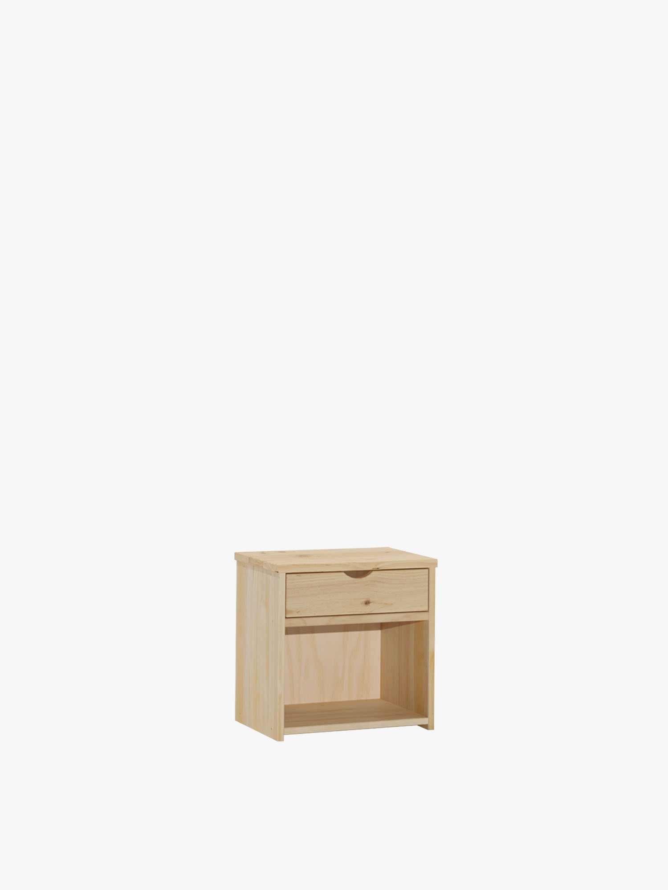
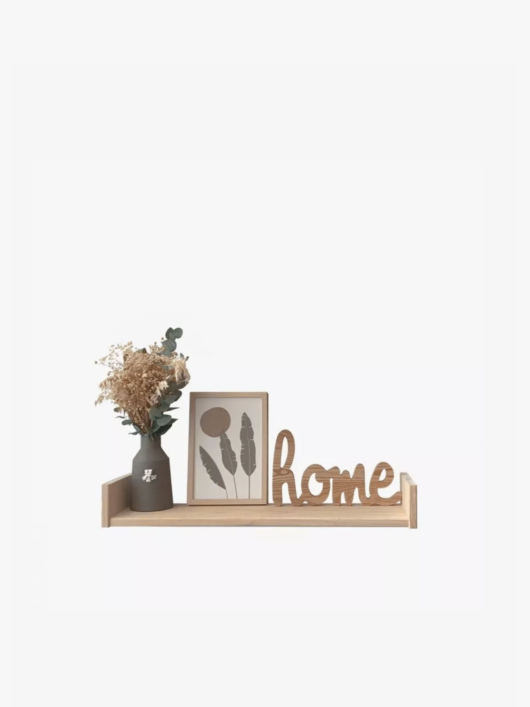
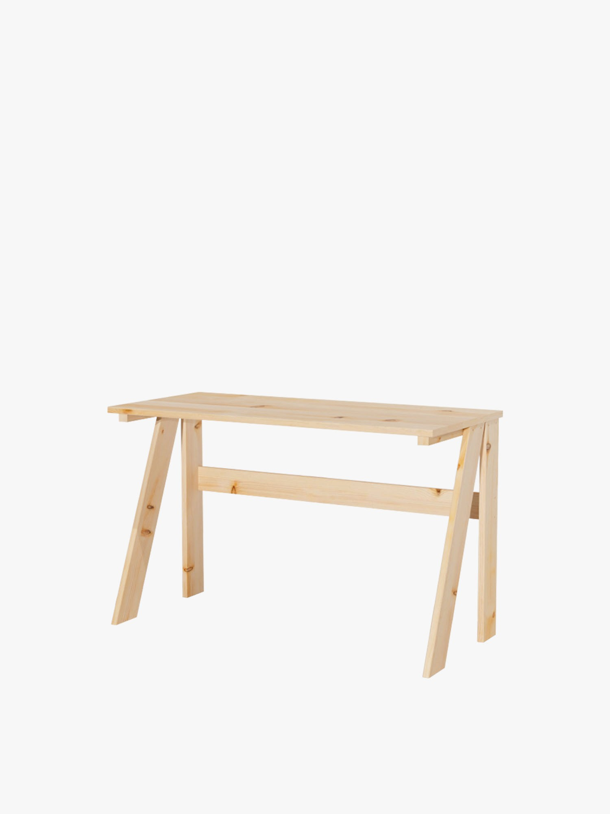

GAU mesita de noche con cajón
Mesita GAU con cajón de almacenaje, fabricada en madera maciza natural.
Ver ficha oficial ↗MUEBLES LUFE • SELECCIÓN
Una mesita, un estante y un escritorio: explora una combinación real y comprueba tu espacio antes de seguir.

Tres referencias reales. Las opciones, precios y existencias se confirman en la tienda oficial.
Mesita GAU con cajón de almacenaje, fabricada en madera maciza natural.
Ver ficha oficial ↗
Estante GOI de pared, de 84 × 21 cm, en madera maciza natural.
Ver ficha oficial ↗
Escritorio BURU de 120 × 55 cm, en madera.
Ver ficha oficial ↗TU LISTA LOCAL
Tu selección queda en este navegador. No reserva productos ni envía pedidos.
LUFE vende muebles de madera natural directamente desde fábrica.
El catálogo se puede explorar por producto o estancia.
Las fichas publican medidas y rutas de montaje; deben comprobarse para la variante elegida.